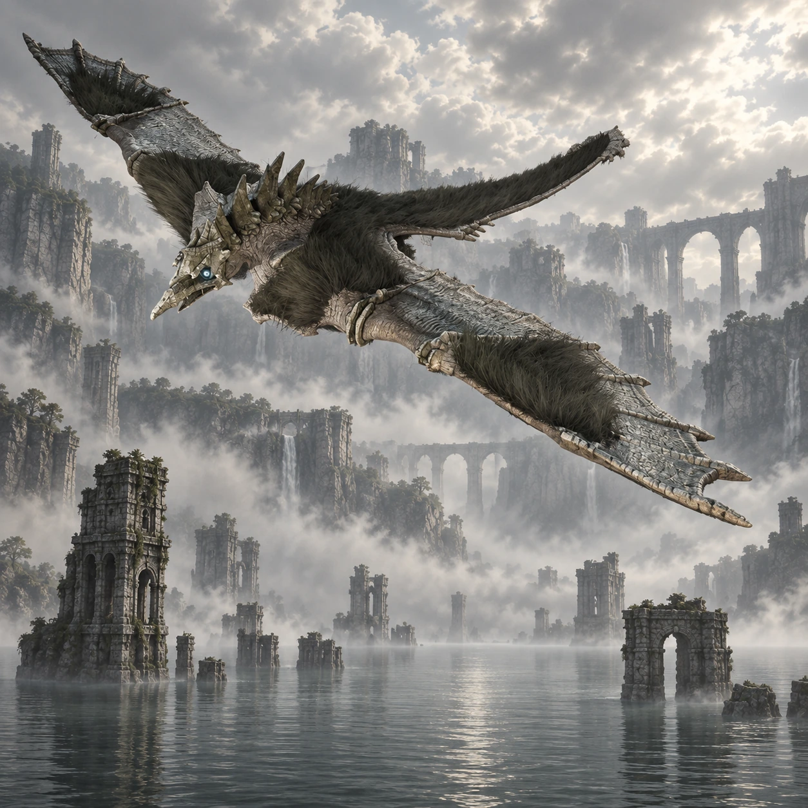

Dois nomes, duas origens
“Bird” é um nome de desenvolvimento. “Avion” é o nome popular entre os fãs, não um nome próprio apresentado durante o jogo.

Colosso 05 · Terras Proibidas
Uma sombra atravessa a névoa.
Avion repousa acima de um lago tomado por ruínas. Quando abre as asas, a distância entre Wander e o gigante deixa de ser apenas uma questão de altura.
Conheça o gigante01 / O gigante
Uma cabeça pequena, asas extensas e uma cauda longa desenham a silhueta de Avion. A pelagem escura acompanha superfícies que se movem a cada batida de asas.
As torres e colunas que emergem do lago dão escala ao voo. Nesse encontro, o próprio corpo do colosso se torna uma plataforma em movimento sobre a água.
*A medida indicada segue a estimativa da comunidade citada nas fontes. Os tamanhos variam entre fontes e escalas; esta é uma referência aproximada de envergadura, não uma medida oficial confirmada.
02 / O caminho
Siga a leste do santuário, pelas passagens entre os paredões. A chegada é marcada por ruínas junto a um grande lago.
Agro fica na entrada. Continue a nado e pelas estruturas de pedra até o ponto de onde é possível avistar o colosso pousado.
Abrir mapa das Terras Proibidas03 / Um olhar mais atento
“Bird” é um nome de desenvolvimento. “Avion” é o nome popular entre os fãs, não um nome próprio apresentado durante o jogo.
Avion é o primeiro colosso alado enfrentado na jornada, levando a escalada para uma superfície que muda de orientação no ar.
Apenas partes das construções aparecem acima do lago. As colunas isoladas sugerem a extensão do conjunto escondido pela água.
04 / O encontro
Algumas pistas para começar, deixando a descoberta da luta com você.
Dicas gerais para o modo Normal. A ficha não detalha todos os pontos vitais nem o desfecho do confronto.
Ficha baseada em registros da comunidade e guias de jogo. A arte é uma interpretação visual, não uma captura do jogo.